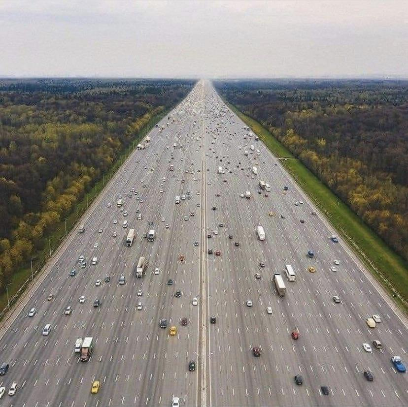

The case for expansion
A roadway has finite capacity. At a constrained interchange, merge, bridge, or intersection, a targeted capital project can increase throughput, remove a geometric choke point, or make operations safer. Freight, emergency response, deliveries, and trips that cannot shift modes all depend on a functional road network.
A responsible project strategy
Montgomery County should identify recurring chokepoints, compare operational fixes with added capacity, and move qualified projects from study to construction without unnecessary delay.
Our preferred project process
- Observe congestion during the busiest hour.
- Measure the cause, duration, and cost of the delay.
- Compare signal, intersection, interchange, and widening options.
- Publish expected travel-time and safety benefits.
- Build the best-performing practical solution.

Address the tradeoffs directly
Widening can require land, displacement, stormwater infrastructure, maintenance funding, and years of construction. Added capacity may improve travel at first while also changing route choice, trip timing, development, and total driving. The serious policy question is not “roads or no roads,” but which investment solves the stated problem at acceptable cost.